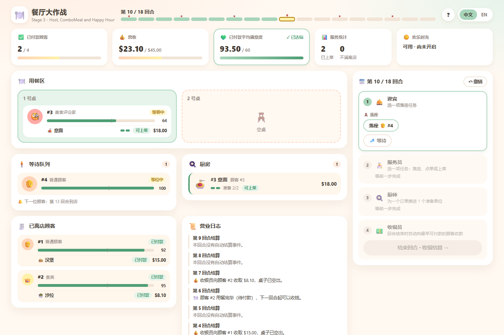
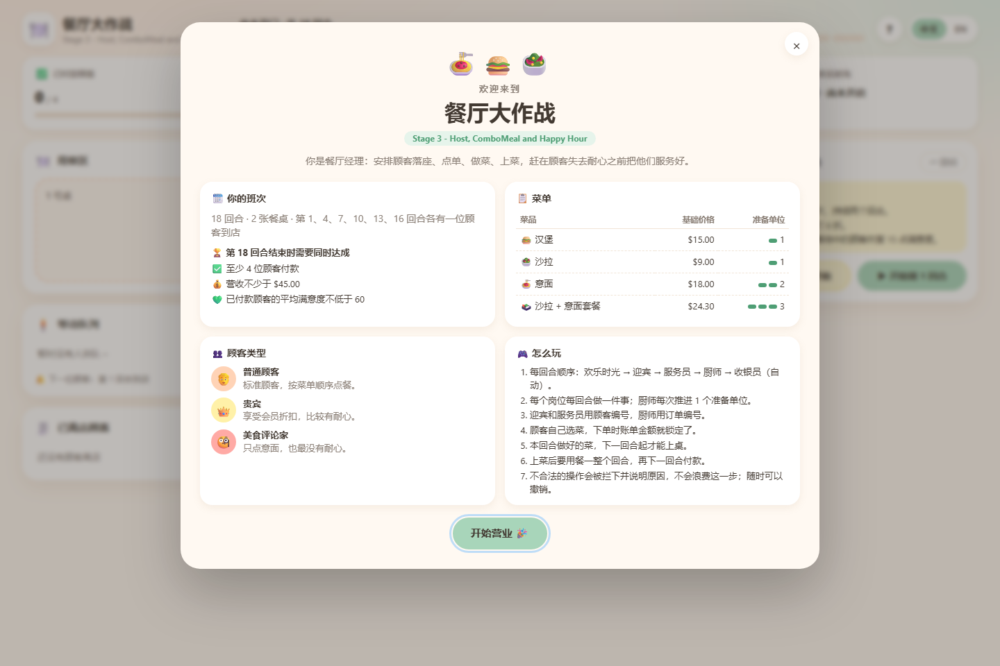

Restaurant Rush
A turn-based restaurant management game in Java · SC2002 Object-Oriented Design & Programming


What this is
Restaurant Rush is a turn-based restaurant management game in Java. The player is the manager: staff time is scarce, so deciding who gets served first is the whole game. It comes in three runnable stages, each a git tag, plus an optional browser front-end.
- Java 17 or newer. No Maven, no Gradle, no external libraries, no network access.
- Two interfaces over the same rules: a command-line game (primary) and an optional web UI.
Repositories
- Group repository: DasbootU9607/SC2002-Object-Oriented-Design-and-Programming
- Fork that adds the optional web UI: zhangxiaozhuang398-max/SC2002-Object-Oriented-Design-and-Programming
Quick start: one launcher
Windows — double-click start.bat, or from a terminal:
start.batmacOS / Linux:
sh start.sh| # | Action | What it does |
|---|---|---|
| 1 | Web UI | Starts the local server and opens the browser |
| 2 | Web UI layout preview | Same, but with a scripted mid-game state |
| 3 | Command line, Stage 3 | The full game |
| 4 | Command line, Stage 2 | VIP and Critic customers |
| 5 | Command line, Stage 1 | Basic game |
| 6 | All tests | 368 assertions across the three stages |
Every entry also works as a direct command, which is convenient for scripts:
start.bat web :: web UI, fresh game
start.bat preview :: web UI, mid-game state
start.bat cli :: Stage 3 in the terminal
start.bat cli2 :: Stage 2
start.bat cli1 :: Stage 1
start.bat test :: all three test suitesWeb UI (front-end)
The browser front-end is an extra boundary object, added after the stage-3 tag.
It contains no game rules: the page only draws GET /api/state
and forwards each click to POST /api/action, and whatever the engine replies is
shown verbatim — including the reason a move was rejected.
stage-3\web.bat :: same as: start.bat web
stage-3\web.bat --preview :: same as: start.bat preview- Served from
http://127.0.0.1:8765— the next free port if that one is busy — and the browser opens automatically. - Uses the JDK's built-in
jdk.httpserver, so it is still dependency-free and fully offline; nothing ever leaves the machine. - Mirrors the console screens: a welcome page with the menu, goals and rules; a turn panel that walks through Happy Hour → Host → Waiter → Chef → Cashier and offers only the targets the console lists for each role; an end-of-turn summary and a shift log; and a results page with every guest's final status.
- Live goal tracker, Happy Hour status, turn timeline with arrival markers, and boards for the queue, tables, kitchen and guests who have left.
- Undo (button or Ctrl+Z), Chinese / English toggle (remembered), light and dark themes, and a layout that works down to phone width.
--no-browserstarts the server without opening a browser.
Command-line game (the primary interface)
stage-3\run.bat
stage-3\run.bat --replay examples\victory.txt
stage-3\run.bat --replay examples\defeat.txtReplace stage-3 with stage-1 or stage-2 for the
earlier stages. Each stage folder is self-contained — src, test,
examples, its own scripts and README — so it can be built and played on its own.
macOS / Linux: sh stage-3/run.sh,
sh stage-3/run.sh --replay examples/victory.txt.
A direct build, without any script:
mkdir -p build/classes
javac -encoding UTF-8 --release 17 -d build/classes src/restaurantrush/*.java
java -cp build/classes restaurantrush.MainTests
verify.bat :: same as: start.bat testRuns the three dependency-free suites: 99 + 110 + 159 = 368 assertions, exit code 0 when everything passes. They cover the brief's Pasta timeline, staff capacity, invalid input retries, queue and table rules, abandonment and cancellation, payment order, price and satisfaction snapshots, both endings, polymorphic customer behaviour, Host actions, combo rounding, and Happy Hour duration and lock-in.
Project layout
.
├─ start.bat / start.ps1 / start.sh one-stop launcher
├─ verify.bat / verify.ps1 / verify.sh all three test suites
├─ docs/ this page and the screenshots
├─ stage-1/ stage-2/ stage-3/ one self-contained snapshot per stage
│ ├─ src/restaurantrush/ Java sources
│ ├─ test/restaurantrush/ dependency-free test suite
│ ├─ examples/ victory and defeat replays
│ └─ run / test scripts, README
└─ stage-3/
├─ src/restaurantrush/ui/ web boundary (server, session, JSON writer)
└─ web/ index.html, style.css, app.jsBase setting
| Setting | Value |
|---|---|
| Turns | 18 (the game always plays all of them) |
| Tables | 2 |
| Staff | Waiter ×1 (one task per turn), Chef ×1 (one preparation unit per turn), Cashier ×1 (one payment per turn) |
| Arrivals | One customer on turns 1, 4, 7, 10, 13 and 16 |
| Victory | at least 4 paid customers and revenue ≥ $45.00 and average paid satisfaction ≥ 60 |
| Menu item | Price | Preparation units |
|---|---|---|
| Salad | $9.00 | 1 |
| Burger | $15.00 | 1 |
| Pasta | $18.00 | 2 |
| Combo (Salad + Pasta) | $24.30 | 3 |
Customers choose their own meals by a documented deterministic rule. Prices are integer cents and are locked when an order is taken. The average satisfaction uses the value recorded at the moment each customer pays.
The three stages
| Folder | Git tag | Adds | Assertions |
|---|---|---|---|
stage-1/ | stage-1 | Basic game with Regular customers | 99 |
stage-2/ | stage-2 | VIP and Critic customers | 110 |
stage-3/ | stage-3 | Host, ComboMeal, Happy Hour | 159 |
Repeated source files between stage folders are intentional: each stage is an independent,
self-contained snapshot. The tags are annotated and sit on successive commits, so
git switch --detach stage-1 shows only Stage 1.
Stage 1 → Stage 2
New source files: VIPCustomer.java, CriticCustomer.java.
Changed source: GameSetup.java registers the mixed arrival schedule and changes
the stage banner; GameTests.java adds polymorphism checks and updates the replay
expectations. No source files were deleted — GameEngine, the staff classes,
ConsoleUI and the existing model classes are unchanged, which is the point: new
customer behaviour arrives without touching the turn sequence.
Stage 2 → Stage 3
New source files: Host.java, ComboMeal.java,
HappyHourPolicy.java.
| Changed source | Reason |
|---|---|
GameSetup.java | Register the combo and update the stage banner |
Menu.java | Store combo choices and implement the documented selection rule |
Customer.java | Encapsulate satisfaction recovery without reviving departed customers |
GameState.java | Delegate price quotations to the active pricing policy |
GameEngine.java | Add the Host phase and policy hooks around the existing turn sequence |
ConsoleUI.java | Collect the new choices and display the remaining Happy Hour duration |
No source files were deleted. Order lifecycle, preparation, serving, payment, table release, the customer subclasses, integer money and the result rules are unchanged.
Because each stage is a self-contained folder, GitHub shows these transitions as added snapshots. For a focused source-only comparison locally:
git diff --no-index stage-1/src stage-2/src
git diff --no-index stage-2/src stage-3/src(A diff exit code of 1 means differences were found — not a failed build.)
Web UI as design evidence
The web front-end was added after stage-3 and is a second boundary
implementation over the same control and domain classes. Adding it required no change
to any rule class; the only touch on existing code was extracting the three victory
targets in GameResult into named constants, so that the rule and the UI read the
same numbers from one place. That is a concrete, checkable example of keeping rules out of
the UI.
Reproducible runs
| Replay | Paid | Served | Revenue | Paid satisfaction | Outcome |
|---|---|---|---|---|---|
| Stage 1 victory | 5 | 5 | $66.00 | 79.20 | VICTORY |
| Stage 2 victory | 5 | 5 | $65.10 | 78.00 | VICTORY |
| Stage 3 victory | 5 | 6 | $72.78 | 85.60 | VICTORY |
| Every stage, defeat | 0 | 0 | $0.00 | N/A | DEFEAT |
Every supplied replay runs all 18 turns. The Stage 3 victory activates Happy Hour on turn 4, puts a VIP order through at the promotional price, prepares a three-unit combo and uses the Host in addition to the Waiter. The same Stage 3 victory, replayed through the web API, reaches identical figures — the web boundary is exercised end to end, not just by hand.
Still to submit
The repository supplies the code, three runnable stage snapshots, test evidence and the source documentation. The group still has to produce the final UML class and sequence diagrams, the PDF report, the recorded group video, and the signed declarations.
| # | Video segment | Timestamp |
|---|---|---|
| 1 | The game launching from the submitted project | |
| 2 | Meaningful manager choices, including a constrained decision | |
| 3 | A dish going READY → SERVED → payment | |
| 4 | A VIP or Critic behaviour | |
| 5 | A Stage 3 feature | |
| 6 | One victory and one defeat | |
| 7 | The stage tag comparisons and the diagrams |
Notes for anyone running this on Windows
- The
.ps1scripts are wrapped by.batfiles that pass-ExecutionPolicy Bypass, because PowerShell otherwise refuses to load an unsigned script. - The scripts change into their own folder and pass only relative paths to
javac. Windows PowerShell 5.1 mangles non-ASCII characters in absolute paths, which breaks the build when the project sits in a folder with a non-ASCII name. start.ps1is saved as UTF-8 with BOM on purpose: PowerShell 5.1 reads a BOM-less UTF-8 script as ANSI and then mis-parses the Chinese menu labels.